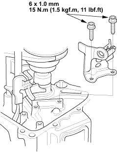
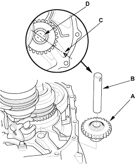
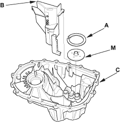
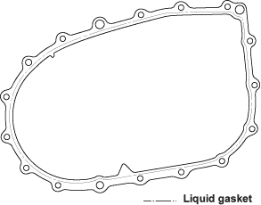

- Install the reverse shift fork.

- Install the reverse idler gear (A) and reverse gear shaft (B) by aligning the mark (C) with reverse gear shaft hole (D).


- Select the proper size 72 mm shim (A) according to the measurements made during the Mainshaft Thrust Clearance Adjustment (see page 13-46). Install the oil gutter plate (B), oil guide plate M, and 72 mm shim into the transmission housing (C).

- Remove the dirt and oil from the transmission housing sealing surface. Apply liquid gasket (P/N 08C70-K0234M) to the sealing surface. Be sure to seal the entire circumference of the bolt holes to prevent oil leakage.
NOTE: If 5 minutes have passed after applying liquid gasket, reapply it and assemble the housings. Allow it to cure at least 20 minutes after assembly before filling the transmission with oil.
